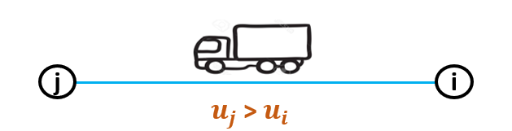
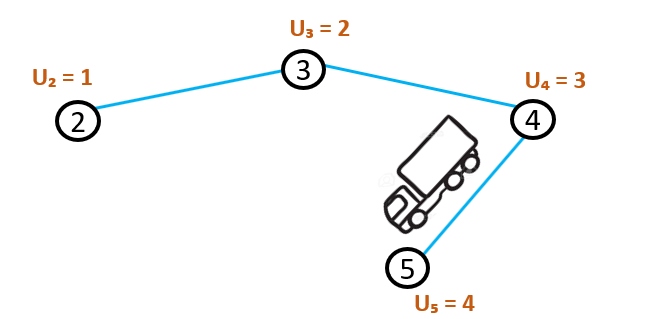
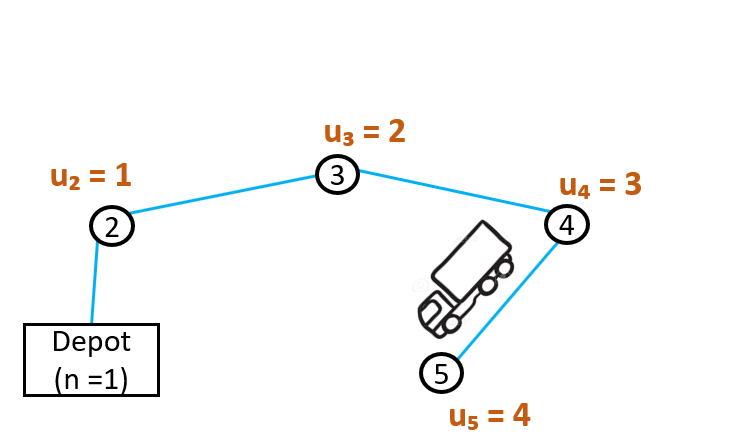

旅行商问题（Travelling salesman problem , TSP）
Reference
https://how-to.aimms.com/Articles/332/332-Miller-Tucker-Zemlin-formulation.html
http://www.dei.unipd.it/~fisch/ricop/OR2/compact_TSP_MTZ.pdf
1 问题概述
旅行商问题（Travelling Salesman Problem, TSP）
是一个经典的组合优化问题，其核心目标是寻找一条最短路径，使得旅行商能够访问所有给定的城市一次且仅一次，最终回到起点.
这一问题在数学、计算机科学、物流管理等领域具有重要意义，也被广泛研究.
核心目标：在给定的城市集合中，寻找一条闭合路径（回路），使得总行程距离最短.
图论表示：将城市视为图中的顶点，城市间的距离视为边的权重.
TSP可转化为在图中寻找最短的哈密尔顿回路（即经过所有顶点一次的回路）. -
数学公式：
D = [d_{ij}] $，其中 $ d_{ij} $ 表示城市 $ i $ 到 $ j $ 的距离.
目标是找到排列 $ :raw-latex:`pi `$，使得总距离 $
:raw-latex:`\sum`{i=1}^{n} d{:raw-latex:`pi`(i),
:raw-latex:`\pi`(i+1)} $ 最小（其中 $ :raw-latex:`pi`(n+1) =
:raw-latex:`pi`(1) $）.
计算复杂度 -
NP难问题：TSP属于NP难问题，意味着对于大规模实例（如100个以上城市），传统算法（如穷举法）无法在合理时间内找到最优解.
其时间复杂度为 $ O(n!) $，随城市数量增长呈指数级爆炸.
解决方法 1. 精确算法（适用于小规模问题）： -
动态规划：利用状态压缩存储中间结果，时间复杂度 $ O(n^2
:raw-latex:`cdot 2`^n) $. -
分支定界法：通过剪枝缩小搜索空间，但最坏情况下仍为指数级.
启发式算法（近似最优解）：
贪心算法：每次选择最近未访问的城市，但结果可能较差.
遗传算法：模拟自然选择，通过交叉、变异等操作优化路径.
模拟退火：在解空间中随机搜索，允许一定概率接受较差解以跳出局部最优.
蚁群优化：模拟蚂蚁觅食行为，通过信息素引导路径选择.
近似算法：
Christofides算法：通过构造最小生成树和匹配，保证解的近似比为1.5，时间复杂度
$ O(n^3) $.
实际应用 - 物流与运输：优化配送路线，降低成本. -
制造业：电路板钻孔路径规划. - 生物学：DNA测序中的序列拼接. -
计算机网络：数据传输中的路由优化.
研究进展 -
大规模问题：通过分布式计算和优化算法（如LKH算法），已能求解数万城市的实例.
机器学习：利用深度强化学习（如神经组合优化）自动生成路径策略. -
量子计算：探索量子退火机对TSP的加速潜力.
2 问题数学公式表达
旅行商问题（TSP）可被表述为一个整数线性规划问题.
目前已知多种表述形式，其中两种值得关注的是米勒-塔克-泽姆林（MTZ）公式和丹齐格-富尔克森-约翰逊（DFJ）公式.
DFJ公式的约束性更强，不过MTZ公式在特定场景中仍有用处.
标记城市，且将 $ c_{ij} > 0 $ 定义为从城市 $ i $ 到城市 $ j $
的成本（距离）. 公式中的主要变量为：
\[ \begin{align}\begin{aligned}x_{ij}=\\\begin{cases}\\\begin{split}1 & \text{路径从城市 } i \text{ 到城市 } j \\\end{split}\\0 & \text{否则}\\\end{cases}\end{aligned}\end{align} \]
特别地，规划的目标是最小化旅行路线总长度：
\[\begin{split}\sum_{i=1}^{n}\sum_{\substack{j \neq i, \\ j=1}}^{n}c_{ij}x_{ij}\end{split}\]
会遍历边集的所有子集，这与旅行路线的边集差异极大，甚至会得出所有 $
x*{ij} = 0 $ 的无意义最小值.
因此，两种公式均包含约束：每个顶点恰好有一条入边和一条出边，这可表示为
$ 2n $ 个线性方程：
\[\begin{split}\sum_{\substack{i=1, \\ i \neq j}}^{n}x_{ij}=1 \ （j=1, \ldots, n）；\quad \sum_{\substack{j=1, \\ j \neq i}}^{n}x_{ij}=1 \ （i=1, \ldots, n）\end{split}\]
可以说，正是这一全局要求让TSP成为难题.
MTZ与DFJ公式的差异，体现在如何将这一最终要求（子线路消除约束）转化为线性约束.
米勒-塔克-泽姆林公式（MTZ公式）
公式背后的思想
MTZ公式引入了一个额外变量 $ u_i $，除
depot（调度中心）外，每个节点都有对应的 $ u_i $ 值. 若车辆从节点 $ i $
驶向节点 $ j $，则 $ u_j $ 的值必须大于 $ u_i $.

因此，每次访问新节点时，$ u_i $ 的值都会增加.

车辆访问节点 5 后，下一个节点的 $ u_i $ 值也应更大. 例如，车辆无法从节点
5 回到节点 2，因为节点 2 的 $ u_i $ 值更小.
这确保了车辆不会绕圈行驶——若绕圈，就无法让每个 $ u_i $ 值都大于前一个.
由于调度中心（depot）没有 $ u_i $
值，如果车辆在调度中心开始和结束，可以绕一圈行驶.

此时，车辆可从节点 5 驶回调度中心，且 $ u_j $ 始终大于 $ u_i $.
因此，唯一被允许的绕圈是经过调度中心的情况，其他绕圈都会形成子回路，而
MTZ 公式会消除这些子回路.
子线路消除约束
无关联关系.
\[ \begin{align}\begin{aligned}\begin{alignat*}{3}\\\begin{split}\min & \quad \sum_{i=1}^{n} \sum_{\substack{j \neq i, \\ j=1}}^{n} c_{ij}x_{ij} \\\end{split}\\\begin{split}\text{约束条件：} & \quad x_{ij} \in \{0,1\} & & \quad i,j = 1, \dots, n; \\\end{split}\\\begin{split}& \quad \sum_{\substack{i=1, \\ i \neq j}}^{n} x_{ij} = 1 & & \quad j = 1, \dots, n; \\\end{split}\\\begin{split}& \quad \sum_{\substack{j=1, \\ j \neq i}}^{n} x_{ij} = 1 & & \quad i = 1, \dots, n; \\\end{split}\\\begin{split}& \quad u_i - u_j + 1 \leq (n - 1)(1 - x_{ij}) & & \quad 2 \leq i \neq j \leq n; \\\end{split}\\& \quad 2 \leq u_i \leq n & & \quad 2 \leq i \leq n.\\\end{alignat*}\end{aligned}\end{align} \]
最后约束确保仅存在一条覆盖所有城市的路线，而非多条不相交但共同覆盖城市的路线.
丹齐格－富尔克森－约翰逊公式（DFJ公式）
\[ \begin{align}\begin{aligned}x_{ij}=\\\begin{cases}\\\begin{split}1 & \text{路径从城市 } i \text{ 到城市 } j \\\end{split}\\0 & \text{否则}\\\end{cases}\end{aligned}\end{align} \]
于是，旅行商问题（TSP）可表述为如下整数线性规划问题：
\[ \begin{align}\begin{aligned}\begin{alignat*}{3}\\\begin{split}\min & \quad \sum_{i=1}^{n} \sum_{\substack{j \neq i, \\ j=1}}^{n} c_{ij}x_{ij} \\\end{split}\\\begin{split}\text{约束条件：} & \quad \sum_{\substack{i=1, \\ i \neq j}}^{n} x_{ij} = 1 & & \quad j = 1, \dots, n; \\\end{split}\\\begin{split}& \quad \sum_{\substack{j=1, \\ j \neq i}}^{n} x_{ij} = 1 & & \quad i = 1, \dots, n; \\\end{split}\\\begin{split}& \quad \sum_{i \in Q} \sum_{\substack{j \neq i, \\ j \in Q}} x_{ij} \leq |Q| - 1 & & \quad \forall Q \subsetneq \{1, \dots, n\},\ |Q| \geq 2.\end{split}\\\end{alignat*}\end{aligned}\end{align} \]
Q $ 能形成子回路，因此最终解是单一回路，而非多个小回路的并集.
直观来说，对于城市的每个真子集 $ Q $，该约束要求 $ Q $
中的边数少于城市数：若 $ Q $ 中的边数与城市数相等，就表示 $ Q $
中的城市形成了一个子回路.
由于这会导致约束数量呈指数级增长，实际中需用行生成法求解.
使用MTZ公式的TSP问题有\(O(n^2)\)个约束，\(O(n^2)\)个0-1变量以及\(O(n)\)个连续变量.
使用DFJ公式的TSP问题有\(O(2^n)\)个约束，\(O(n^2)\)个0-1变量.